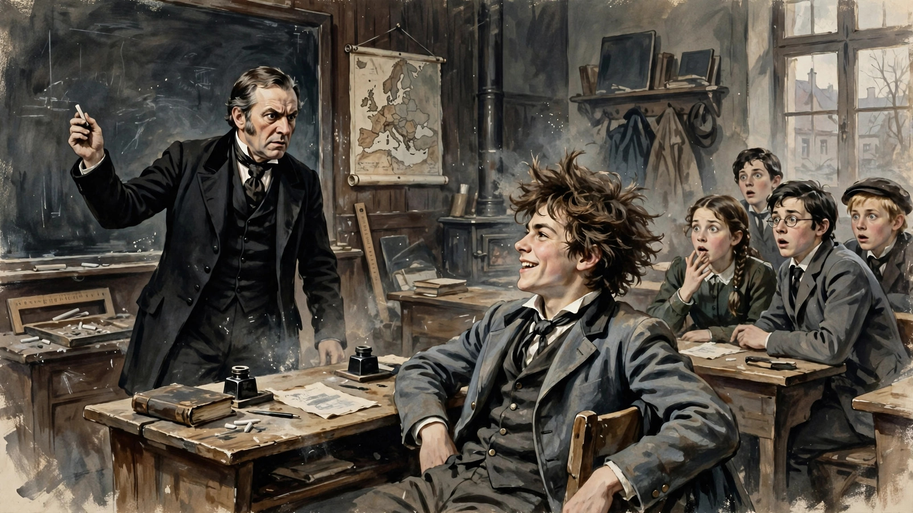
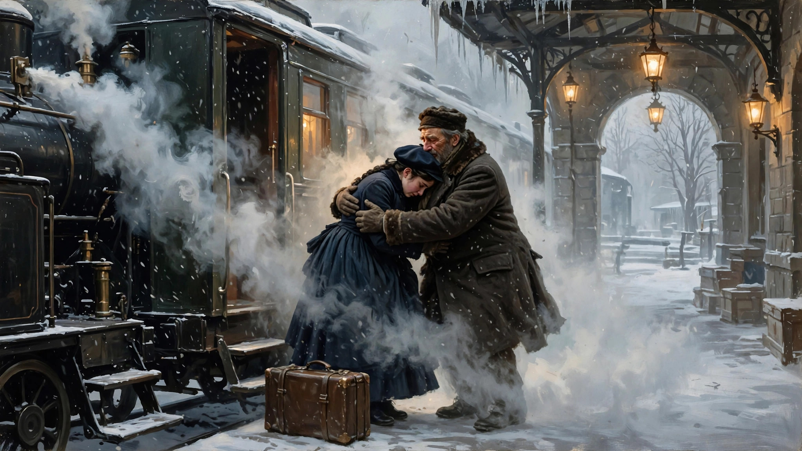

天才就可以为所欲为？
欢迎点击上方名片关注我。您的支持是我坚持原创的最大动力。
看了两集国家地理的爱因斯坦传记剧集《天才》，气笑了。先上来吐个槽。
提到爱因斯坦几乎没人不知道，他是现代物理学的奠基人，和牛顿牛爵爷都是千年一出的天才。他获得的诺奖跟他真正的成就来比就是小case，他的相对论至今仍然广泛应用于人类日常生活的方方面面，并且不断得到证明。要知道，这么伟大的发现是早在一个多世纪前就做出的，可见爱因斯坦有多天才。某种意义上，说他是天才都委屈了他，说他是神也不为过。
我气笑和吐槽的点不是剧集本身，而是前两集和他的科学成就完全不相干的雷人剧情。当然这部剧是基于一部著名的传记改编，事实上不会偏差多少。我们普通人就当是爱因斯坦的真实经历好了，不必追求细节的严格对应。但剧情也好，真实经历也罢，都不妨碍前两集内容的炸裂性。简单说，这两集主要告诉我们：爱因斯坦年轻时（也是他一生成就最高的高光时期）在情感方面是个自私、冷漠、自我中心的家伙，用今天的通俗话说，就是一妥妥的渣男。
先来大致说下前两集的主要内容。
爱因斯坦家境不错，中学时，他爸爸把他送到德国一个很好的学校里。对他寄予厚望，希望他以后学成接管家族事业。但爱因斯坦一点也不喜欢那个学校，觉得老师讲得太简单，照本宣科啥的。他时不时在老师讲课时接下句甚至顶撞老师，搞得老师下不来台。他对家族事业也毫无兴趣，沉醉于科学探索的世界里。中学毕业，他爸爸也管不了他，只好由他去瑞士报考苏黎世理工学院（下称苏理工）。入学考试时，由于他严重偏科，只有物理数学过了，其他科目，如法语、政治、动物园学（真不知道为啥会考这个）等，都没过。所以没被录取。好在主考老师爱才，很欣赏爱因斯坦，就给他指了条路。介绍他去附近的一位朋友家借住，顺便补习那些挂科的科目，来年再考。

爱因斯坦去了那位朋友家，开门迎接他的是一位漂亮可爱的少女Marie，以及一大堆其他孩子。男主人出来欢迎他，表示久仰其狂放不羁的“名声”。于是爱因斯坦就在这位朋友家住下。Marie主动为他补习法语，少男少女在一起，自然日久生情。于是两人就那啥了。爱因斯坦后来顺利考入苏理工，从此与Marie分别。Marie这边仍然对爱因斯坦一往情深，可爱因斯坦很快就把这段感情淡忘了。
入学后，爱因斯坦结识了一位很励志的、腿部有点残疾的女生学霸米列娃。在当时学物理的女生非常罕见，残疾女生就更罕见了。刚开始米列娃出于从小到大的敏感自尊将“多情种”爱因斯坦拒于千里之外。但她终究架不住爱因斯坦的穷(si)追(chan)不(lan)舍(da)，不久也对爱因斯坦产生爱慕之情。
与此同时，爱因斯坦虽然不大搭理Marie，但并没有和她明确提分手。中途他还回去和Marie重逢过一次。重逢时，Marie对他仍是充满浓浓的爱，但他对Marie已经冷淡了。他表现出来的理由不过是没法和Marie交流科学上的事。这套说辞听上去很耳熟吧（渣男：缺乏共同语言？这词儿我熟）？但我忍不住反问一句，当初睡人家的时候咋不觉得“无法交流”呢？自那以后，爱因斯坦再也不回Marie的信。痴情的Marie仍然给他写信和寄礼物，而爱因斯坦始终对她保持着既不回复也不拒绝的态度，一直到他开始疯狂追求米列娃期间仍然如此。最后还是米列娃自己无意间发现Marie寄给爱因斯坦的信和礼物。她深受打击，责怪爱因斯坦玩弄她的感情，又耽误了她的学业，害她多年的努力有付之东流的危险。于是她打算和爱因斯坦分手，专注于学业。
爱因斯坦这才急了，马上写信给Marie的父亲（就是那位接待他，给他提供食宿，并让女儿辅导他法语的慷慨主人），大意是声明和Marie一刀两断。Marie当然是悲痛欲绝，但爱因斯坦到此就算和她了结了。就是看到这里给我气笑了，这得有多没良心、多厚脸皮的人才能做到这样恩将仇报啊。没有这家人的帮助，他能顺利在第二年考上心怡的学校？他是怎么回报这家人的？祸害人家闺女，见异思迁，始乱终弃。长着如此天才的大脑，但道德感却如此稀薄，这种反差给我一下干懵了。
接下来，爱因斯坦去找米列娃求和，告知已和Marie分手，并诚恳道歉。米列娃毕竟心软，两个人又在一起了。后来，考试结果公布，爱因斯坦过了，但米列娃却落榜。本来，以米列娃的资质，过这种考试问题不大。谁让她在决定自己人生走向的关键时刻遇到了爱因斯坦并堕入爱河呢？
第二集末尾，米列娃坐火车回家，在车站来接她的是对她寄予厚望的老父亲。米列娃感觉自己辜负了老父亲，伤心不已。老父亲过来拥抱安慰米列娃，却发现米列娃已身怀六甲。

后面的我还没看，但我知道爱因斯坦并没有止步于米列娃（后与米列娃离婚，娶了爱尔莎）。出于好奇查了查爱因斯坦的维基百科，发现关于Marie的只有寥寥数语（爱因斯坦给中学时的“女友”写信）。可见，这只是爱因斯坦的一笔风流账罢了。
今天写这篇之前和AI聊了聊这件事，结合一下谈谈我的感悟。在我和AI的对话中，我提到，像爱因斯坦这样在某个领域对人类有杰出贡献，但私德不怎样的例子还有不少。比如，科学领域的薛定谔（私生活相当前卫且混乱）、居里夫人（与郎之万的婚外情）、霍金（抛弃照顾他最久的发妻简另结新欢）；政治领域的“革命先行者”孙文（“为尊者讳”就不展开说了，很容易查到）；文艺领域有徐志摩、鲁迅等“自由恋爱”实践者（他们的“轶事”很多，这里也不用说了），毕加索（多段婚姻和无数情人）、托尔斯泰（早年私生活混乱，后期婚姻充满冲突）等等。我问了AI一个问题，这些人为何在婚姻爱情观上常表现得自私、冷漠、自我中心？
在AI的回答中，我觉得解释得通的大概有（以下是我整理概括的，不一定是AI原话）：1.深度创造和亲密关系都需要持续投入，而人的精力是有限的。所以当杰出人物在一个领域取得重大成就时，往往就要以其他方面的短板为代价。2.成功带来的合理化和特权感。他们往往认为情感自由是其早期付出的“补偿”。名声也强化了 他们的“例外”心理，社会对他们更为宽容。例如，霍金在长期被照顾后仍选择离开，部分就体现了这种“我的感受优先”的逻辑。3. 时代和文化放大效应。许多人处在婚姻制度剧烈变动的时期。自由恋爱、个性解放被高度浪漫化。徐志摩公开主张“无爱之婚姻无可忍”，鲁迅对包办婚姻的拒绝，薛定谔的开放关系，都带有“进步”的自我叙事。
AI还强调，这些解释是“描述性”的，并非辩护。毕竟私德好就是好，不好就是不好，没什么好争论的。很多时候，只是因为这些名人头上的“光环”太过耀眼了，以至于人们只看见他们的贡献，而根本不会注意为他们的不良私德买单的人。例如，Marie、米列娃、张幼仪、朱安、简·霍金、薛定谔的多位情人等，她们都默默地付出了沉重代价。 如果没有事无巨细记载名人生活的传记，这些人恐怕连历史的尘埃都算不上。
写到这里，我的情绪已较开篇时有所平复。因为我通过与AI的聊天认识到，人是多维度的。极高的专业能力与普通甚至低下的情感能力其实是可以共存的。我们评价公众人物，尤其是杰出人物时，应当本着客观、平和的态度，既不必神化他们，也不必因私德完全否定他们的贡献。虽然天才、英雄、精英在历史上的贡献不可磨灭，但他们首先是“人”，他们拥有人类的一切缺点和弱点。所以并不是说天才们就可以为所欲为。天才们可以不在乎别人的看法，但随着时代的进步和文明的发展，天才们的私德会越来越多地接受公众的严格审视。
我们都知道，人无完人，人非圣贤。但天才们如果在私德方面也能律己，给公众树立更好的榜样，往小了说，是对自己和社会负责任的行为，往大了说，是人类文明发展的幸事。